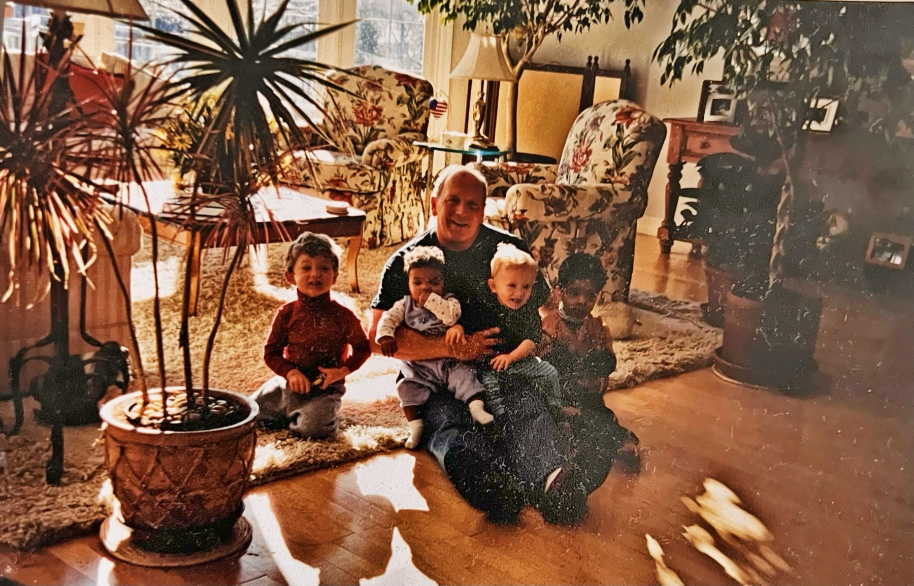

the first of its kind multi-step handcare system specially formulated for healthcare workers
explore the technologyavenall
A botanical glove coating, sanitizer, soap, and lotion, designed to work together so hands stay soft and comfortable from the first wash of a shift to the last.
Constant washing strips away skin's natural oils, sanitizer dries hands further, and hours in gloves leave skin feeling tight and uncomfortable. Healthcare workers feel it every shift.
2,000× smaller than colloidal oatmeal.
Our patent-pending process frees the actives locked inside the oat and shrinks them, so they diffuse into skin instead of sitting on the surface.
Discover the technologyCare built around the whole shift.
- 01
Before · Sanitizer
Cleanses without leaving hands feeling stripped.
- 02
During · Glove coating
Oat actives work with skin for as long as gloves are on.
- 03
After · Lotion
Replenishes moisture so hands feel soft again.
Our story
Avenall™ began with our grandfather, Joe Neuser: a creator, inventor, teacher, and leader until his final days. Over nearly a decade, Joe and his business partners worked quietly but passionately on oat-derived formulations, ultimately developing a patented approach to oat-based skincare ingredients.
When Joe passed away unexpectedly, his work could have ended with him. Instead, we chose to carry it forward. Today, Avenall™ is led by his grandchildren (Jackson, Payton, Ryan, and Chloe), who are building the company he envisioned and bringing his formulations to the brands and formulators who can put them to work.
We bring fresh energy to a foundation of years of research. Every partnership we build is a way of honoring the curiosity, persistence, and craftsmanship that defined our grandfather’s life.
Avenall™ exists to carry forward Joe Neuser's vision: bringing science-backed, oat-derived innovation to the skincare and wellness brands that make products people trust.

Bring Avenall™ to your line or your facility.
Glove manufacturers, skincare distributors, and healthcare facilities: we'd love to hear what you're building.
Start a conversation